Groups and summaries in PowerQuery
Previous attendees have said…
- 7 previous attendees have left feedback
- 100% would recommend this session to a colleague
- 86% said that this session was pitched correctly
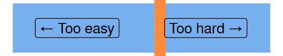
- useful worked examples to follow along with
- excellent session delivered to show grouping functionality - invaluable training for data analysis! Great session thanks again Brendan!
- I had a few technical issues to start with but thanks to the excellent notes that accompany each of the KIND courses I was able to catch up and then follow along with the session.
Introduction
This session will:
- introduce the concept behind groups and summarising
- work through a single-group summary to illustrate the core workflow
- extend that to more complex summary processes to illustrate the scope of the possible
- and spend a little bit of time reviewing some core PQM knowledge useful for those looking to group and summarise in the real world
Setup
- please download the HACA2023-4 survey data and open in Excel
- then import the
Information questionssheet into PowerQuery usingGet data from Table/Range(or pressAlt,A,P,T)
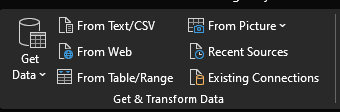
That should open your data in PowerQuery:
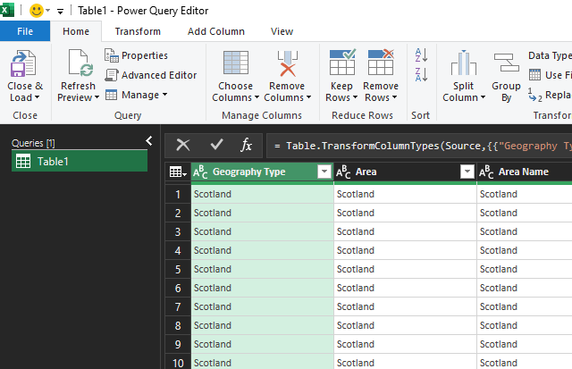
Big idea
- grouping and summarising is possible and desirable in PowerQuery - assuming that your analysis can begin and end with the summarised data
- if you need a mix of full- and summarised-data, consider doing something different (like a Pivot table or DAX formula)
- and Pivot tables are a good way of understanding PQ’s approach to summarising data: take some data, possibly split by other variables, and apply a summary function
- it has the advantage that it returns standard Excel data, rather than oddball Pivot tables, and is comparatively easy to learn
Basic workflow
We’ll follow the same basic set of steps in each example:
- duplicate your Query and rename
- put the data into groups
- then apply a summary function to produce a new summarised table of data
- then return to ordinary PowerQuery work on that new table
First summary
- duplicate your
Table1query and rename togeography_type - select the
Geography Typecolumn, then pressGroup by
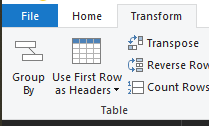
- then select the function that you’d like to use to summarise - we’ll start with
Count rows
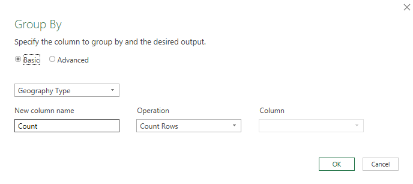
- that will return a summarised table where we’ve created a new column (
Count) that contains a summary measure - a count of rows - for each of the groups that we specified (Geography Type)
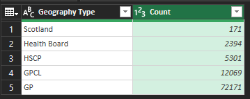
Sum the summary: total responses per question text
While it can be useful to count rows, we can also use the summary function to total up aspects of our data for us.
- repeat the previous steps - so create a new query named
total_responses. Then selectGroup by, and populate as follows:
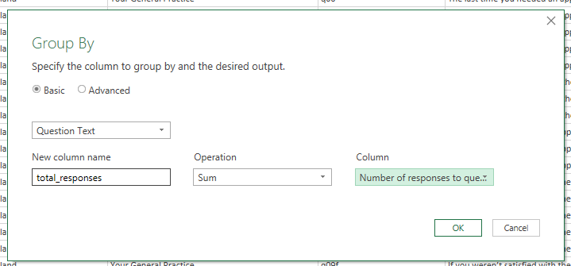
That will produce output that summarises the total responses given to each question:
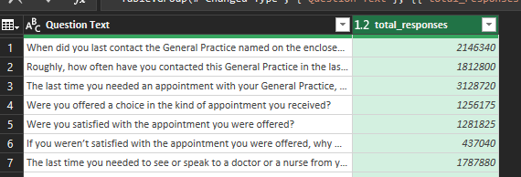
Levels of grouping
Our two examples so far have just used a single layer of grouping. But we could be more ambitious by adding extra grouping variables.
- duplicate to
multi_layersandGroup byagain - switch to
Advancedmode inGroup by, thenAdd grouping - repeat the
total_responsessummary work from the previous example as per the screenshot below:
- that should yield a similar sum of responses, but this time the groups will be per-area and per-question 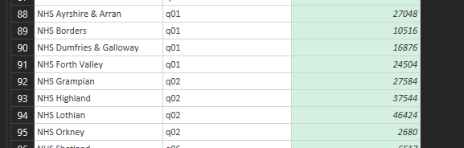
Levels of aggregation
You can also, with the help of the Advanced mode, add several aggregation to your summary table. Rename your query to multi_aggregation, select Group by and set the options as follows:
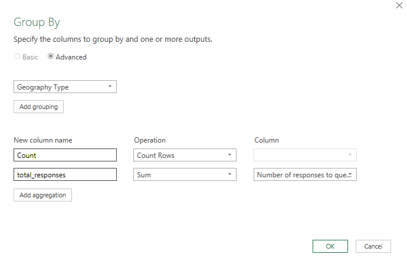 That should yield multiple summary columns with values for each group:
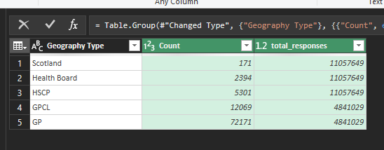
Understanding PQM
While most of the time we can use the menu, it’s extremely useful to have a basic idea about how the underlying PowerQuery M code works, especially if you think you might be using non-standard summary measures.
Setup a new query named concat_questions, grouping by Area Name and again summing the number of responses in a new column called total_responses. Then apply the following settings:
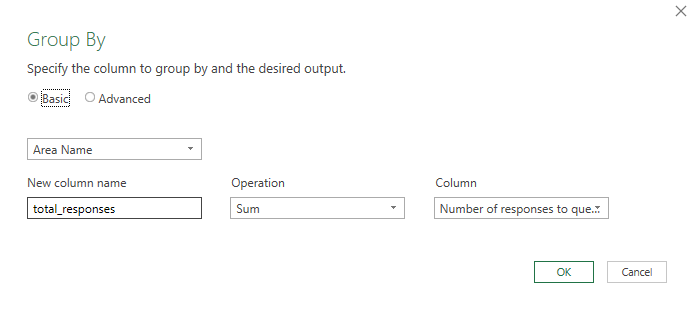
Once that grouping is applied, look at the formula bar, where you should see an PQM expression:
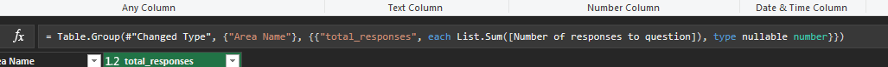
= Table.Group(#"Changed Type", {"Area Name"}, {{"total_responses", each List.Sum([Number of responses to question]), type nullable number}})
This means that we can start to tweak the PQM expressions to gain more control over groups and summaries. Approximately:
-
{"Area Name"}is the grouping variable. If you update this to{"Area Name", "Question Number"}, it’ll add the question number as a second layer of grouping -
"total_responses"is the name of the new column -
each List.Sum([Number of responses to question])describes how the aggregation (sum) takes place. Try tweaking this toeach List.Average([Number of responses to question]), -
type nullable numberdescribes the type of data the summary column contains. Try updating totype text - next, try a different function. In place of
List.Average([Number of responses to question]), tryText.Combine(List.Transform([Question Text], Text.From), "_") - finally, add a step to de-duplicate your results